Using KEEN
Work through frameworks, evidence, risk and the ISMS in one guide. Start with the mapping example if activity names and results are unfamiliar, then follow the detailed workflows for the records you manage.
Get started
Start with a framework and a scope
Select a framework in the framework switcher before reviewing controls, clauses, evidence coverage or the Statement of Applicability. The selected framework follows supported navigation links and filters. Changing it selects a different view of the same evidence and risk register.
The KEEN Assurance Framework is available as KEEN-AF:1.0. It provides a practical set of assurance controls and works with the reusable risk library. Treat it as a starting point for your organisation’s assurance programme. Certification and audit conclusions require their own assessment process; consult the licensed text when applying an external standard.
Begin by agreeing the organisational scope, assets, responsible people and applicable frameworks. Review each relevant control, record why it is included or excluded, and link the policies, risks and evidence that support your decision. A high evidence count shows linked records. Evaluate their relevance, outcomes and coverage to assess control effectiveness.
A practical first session
- Sign in and select the framework you intend to assess.
- Review the framework’s Controls and Statement of Applicability screens, and Clauses when the framework has them.
- Add your assets and responsible people under ISMS.
- Create an asset-specific risk, either directly or from the reusable library.
- Ask an administrator to configure an evidence definition for one operational source.
- Inspect a collected event, its artefact and its mapped controls.
- Create an audit and sample the evidence with an explanation of what it demonstrates.
Your assurance workspace
The home page follows the framework selected in the navigation menu. Its overview shows in-scope control evidence coverage and event mapping counts; the Clauses card appears when that framework has clauses. Available tasks follow your account’s permissions.
Use Needs attention to review controls without evidence, open audits whose end date has passed, and effectiveness measures whose latest numeric entry is outside its configured threshold. Values are compared only when their units match. Administrators also see enabled API collectors with consecutive failures; those collection checks cover the whole installation. Choose Refresh to update the overview.
Use the task links to review evidence, create mappings, work on audits, review risks or record measurements. The Explore your workspace cards retain the connected view: zoom into a framework section or record, follow its evidence and relationships, then use Zoom out to retrace your path or Home to return to the overview. Evidence coverage measures the presence of linked evidence; assess its relevance and quality during review.
Sign-in, accounts and permissions
Use the sign-in method configured for your installation. Self-managed installations can use local accounts or configured identity providers. Your administrator controls users, groups and permissions. An account can be active without having permission to perform every action.
Open the KEEN address provided by your administrator. Use the sign-in method enabled for your installation, such as a local account or your organisation’s identity provider. Your administrator manages account access and permissions.
An administrator has full application access. A normal user receives explicit permissions, directly or through groups. An inherited role is resolved from group membership. Read permissions and manage permissions are separate. Ask for the specific access needed for your work through your own account.
Typical permission families are events.read; audits.read and audits.manage; risk.read and risk.manage; pestle.read and pestle.manage; interested_parties.read and interested_parties.manage; isms.read and isms.manage. Question and incident creation/deletion have separate permissions. audittrail.read controls access to the administration audit trail.
A useful first session
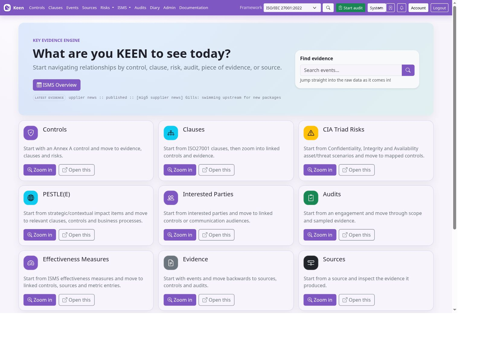
- Select KEEN Assurance Framework in the framework switcher. Open a control and follow one of its evidence links. Inspect the underlying event, supporting material and recorded outcome.
- Open Risk register. Select a sample risk, compare inherent and residual ratings, and inspect its treatment plan and control links.
- Open KEEN Mitigator and describe a fictional concern, such as “Staff use unapproved AI tools to process customer records.” Review the matching library scenarios and control suggestions.
- Visit ISMS: explore an objective, an asset, an effectiveness measure and meeting minutes. Follow their control and clause relationships.
- Open Documents, create a fictional policy and save a second content version. Inspect its revision history.
- Create a small internal audit with a few controls and one document in scope. Sample an event, record a finding and review the report before completing the audit.
Your demo contains example frameworks, evidence, risks and ISMS records. Use fictional information as you explore, and check the expiry shown in KEEN when planning your session.
Frameworks, controls and scope
Manage frameworks in the application

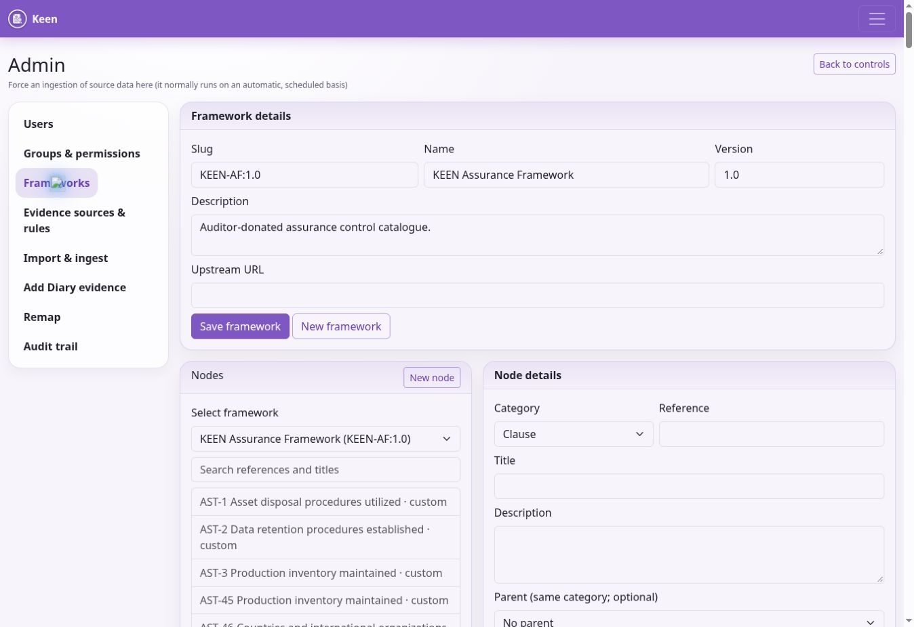
An administrator opens Admin → Frameworks. Use Select framework to edit an existing framework or New framework to create one. Enter a stable slug, name, version, description and optional upstream URL, then choose Save framework. A slug is an identifier: the editor does not rename an existing framework’s slug.
Choose New node to add a Clause, Control or Custom node. Supply its reference and title, then its description, optional parent of the same category, upstream URL, sort order and In scope setting. Control nodes can link to related clauses. Choose Save node and verify the item in the appropriate framework view.
Select a node in the searchable tree to edit it. Its reference and category identify it; create a new node if those need to change. Parent relationships must remain valid. Deleting a node can be blocked by child nodes, clause links or evidence mappings. Review those relationships before attempting deletion and consider marking an item out of scope when historical relationships must remain.
Routine framework management takes place here. Create and maintain frameworks directly in the editor. Use upstream links for authorised guidance and avoid pasting licensed standard text unless your organisation has the right to store and share it.
Controls, clauses and applicability
Controls describe the practices you assess. Open a control to inspect its details, scope justification, linked evidence, risks, related ISMS entities and visualisations. Use the evidence links to check dates, sources and relevance alongside the totals.
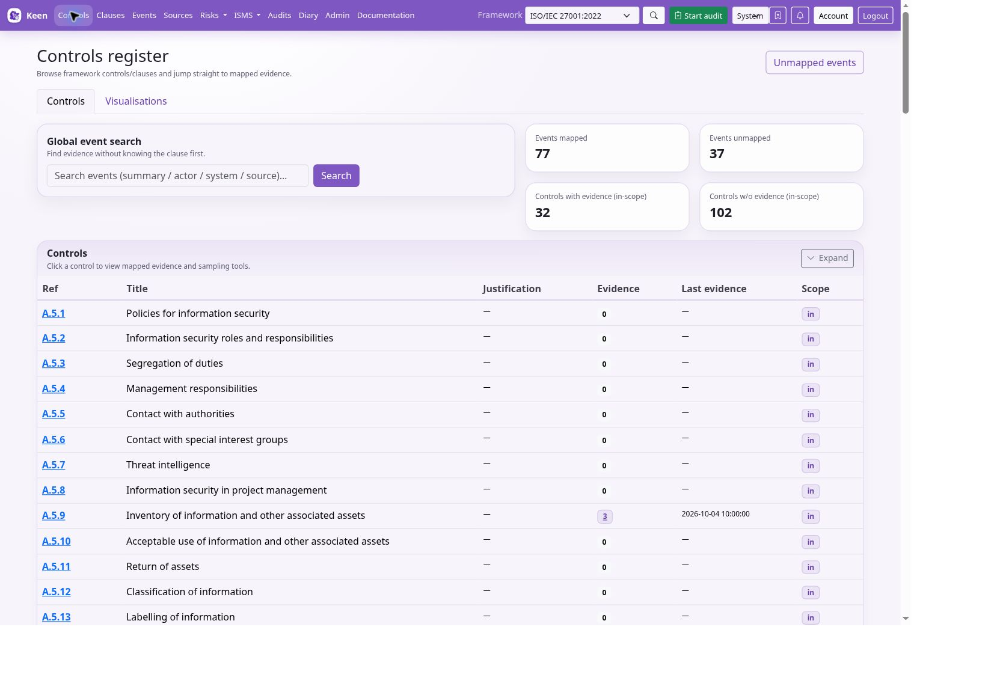
Clauses describe management-system requirements and can form a hierarchy. A clause can link to controls and supporting evidence, PESTLE(E) items, interested parties and ISMS entities. Review both direct evidence and the context supplied by linked controls.
The Statement of Applicability brings scope decisions and relationships together for the selected framework. Explain exclusions and record the basis for inclusion. Keep these explanations current when the business, its risks or its framework changes. Use evidence mappings and risk links to inform your applicability decision.
Design a framework and make scope decisions
A framework is the catalogue against which you organise assurance. Controls describe practices; clauses describe requirements and their hierarchy. The same evidence can map to several frameworks. Switching framework changes the view and its targets, while keeping the same underlying risks and events.
- As an administrator, open Admin → Frameworks. Choose an existing framework, or New framework. Enter a stable slug, name, version, description and, where appropriate, an upstream URL. Save framework metadata first.
- Choose New node. Select Clause, Control or Custom, then enter the reference and title. Add description, sort order and upstream link. Choose a valid parent of the same category when constructing a hierarchy.
- For controls, select related clauses. These relationships allow a clause review to incorporate relevant control context. Evidence mappings separately connect events to controls.
- Set In scope deliberately. Open the resulting control or clause to check the reference, title and relationships. Use the searchable tree to find and edit an existing node.
- Review the Statement of Applicability. Record why requirements apply and why exclusions are justified. Revisit scope after a material change to services, suppliers, assets or obligations.
Keep slugs, references and categories stable: they identify relationships throughout the application. Renaming the displayed title is different from changing identity. Where identity must change, create the replacement deliberately and review links. Deletion can be blocked by children, clause relationships or evidence mappings; marking a node out of scope may preserve the required history.
Use the supplied KEEN-AF controls as editable working material for your assurance programme. Follow upstream links to authorised source material for other standards. Assess control effectiveness by checking the time period, the event outcomes, the assessment rationale and whether the evidence actually addresses the requirement.
Connect sources and collect evidence
KEEN can pull records with built-in adapters or guided API integrations, and accept records pushed by authenticated webhooks or KEEN Agent/OTLP collectors. Each route produces events that can be mapped to framework controls.

Diagram source (Mermaid)
flowchart TB
subgraph Collection["Choose a collection method"]
A["Built-in adapters: Loki, Jenkins, RSS and others"]
B["Guided API integrations"]
C["KEEN Agent or OTLP collector"]
D["Authenticated webhooks"]
end
A --> N["Validate, normalize and redact"]
B --> N
C --> N
D --> N
N --> E["Event and provenance in PostgreSQL"]
N --> S["Evidence artifact in local or S3 storage"]
E --> R["Mapping rules select matching events"]
S --> V["Artifact reference and SHA-256"]
V --> E
R --> F["Framework controls"]
F --> U["Review, questions and audit samples"]
Know which configuration is authoritative
Framework metadata/nodes and evidence definitions are normally edited in the web UI. PostgreSQL stores managed collection and rule documents and their revisions. After the managed configuration records exist, use the web editors to change those documents. Keep bootstrap inputs as recovery material, but back up the database to preserve current edits.
Specialist-adapter credentials, adapter enablement and deployment settings remain server-side. The HTTP integration builder stores reusable connection credentials encrypted in PostgreSQL; its destination policy and encryption key remain deployment settings. The Mitigator’s deterministic vocabulary is a separate YAML configuration file, config/risk_mitigator.yml. Its vocabulary is cached per API process; restart API processes after changing it. Library entries and control text are read from the database on analysis, so their edits do not need a vocabulary rebuild.
Use least-privilege accounts and source-specific credentials. Do not put secrets in definition JSON, framework descriptions, uploaded sample records or operator logs. Version conflicts are a concurrency signal: reload the latest configuration and reconcile before saving.
Bring a connector into service
- Choose one adapter and one small upstream input. Confirm outbound connectivity and TLS validation from the runtime, then grant a dedicated upstream identity access to that input.
- Configure the adapter’s enable flag and connection credentials in the server environment. Restart the affected services according to the deployment process.
- Create the collection input and evidence definition in Admin → Evidence definitions. Run the enabled adapter from Admin → Imports & adapters.
- Inspect the actual normalised event and artefact. Verify timestamp, source, system, actor, action, outcome and collection identity. A successful task returning zero events may simply have no new data.
- Preview the definition against a positive and negative example. Confirm the intended controls exist in the chosen framework and that other inputs cannot match accidentally.
- Enable routine scheduling and monitor the next run. Preserve the cursor and record the expected lookback, upstream quota and failure symptoms.
The administrator’s guide gives adapter-specific settings for Loki, CloudWatch Logs, GitHub, Forgejo, Jenkins, Taiga, BookStack, RSS and Google Workspace. Browser-managed queries or jobs do not grant access to their upstream systems. Grant the collector explicit permission to read the intended CloudWatch log groups.
Before any cursor repair, stop concurrent collection, record the current cursor and back up the database. Rewinding can duplicate processing; advancing can skip history. Resume with a bounded run and verify timestamps and counts. Do not apply one universal cursor-reset command across different adapters.
Build integrations in the web interface
Admin → Integrations provides a guided HTTP/JSON collector builder. Add a reusable connection, choose a template or Custom JSON API, and configure the request, record extraction, field mappings and schedule. GitHub repository events, GitLab project events, Jenkins builds and BookStack page metadata have starter recipes. Existing specialist adapters remain available under Imports & adapters.
- Connect: provide an HTTPS base URL and authentication: none, bearer, Basic, custom header, query parameter, or OAuth client credentials. Credentials are encrypted and kept server-side. Exported definitions contain configuration only. Blank credentials preserve an existing secret.
- Request: set a relative endpoint, GET or POST, query parameters and optional headers/body. Use read/search endpoints: a POST preview still calls the upstream service.
- Evidence: select the JSON array with a JSON pointer such as
/results. Map stableid, timezone-awaretimestampandsummary. Optional fields include actor, system, action, outcome, severity and source URL. Constants and bounded transforms are supported; no scripts are executed. - Schedule: choose single response, page, offset, cursor, next URL or Link-header pagination. Set parameter names, page size and interval. Optional incremental collection sends an ISO timestamp using the configured since parameter; without it the API controls the returned history.
- Test: save a draft and preview its first page (up to ten records). The preview shows normalized evidence and framework matches without storing evidence or changing the cursor. Alternatively paste fictional sample JSON to test field extraction without a network request. Sample previews do not evaluate framework regex rules; use the background Test draft action for rule matching within the worker time limits.
- Publish: publish and schedule the draft. Later edits remain draft-only until published. Use Evidence definitions on the collector to configure recognition and framework targets.
Related detail requests can fetch up to three same-connection JSON objects per record. A path such as /jobs/{/id} uses a URL-encoded record field, and a detail named job appears under /_related/job. This supports bounded list/detail sequences. The builder runs these supported request steps within defined limits.
Operate and recover integrations
The deployment administrator must set KEEN_INTEGRATION_ALLOWED_HOSTS (exact comma-separated hostnames), optional KEEN_INTEGRATION_PRIVATE_CIDRS for approved private HTTPS services, and a persistent KEEN_INTEGRATION_SECRET_KEY on both API and worker. Generate the latter once with python -c 'from cryptography.fernet import Fernet; print(Fernet.generate_key().decode())'. Preserve it separately from database backups. Do not regenerate it at startup. An empty hostname list denies all outbound builder requests; sample previews still work.
Requests validate TLS and pinned DNS addresses, reject redirects and prevent pagination leaving the connection origin. Loopback, link-local and reserved addresses remain prohibited. Defaults are 20 pages and 2,000 records; hard limits are 100 pages, 10,000 records, 4 MiB per response, 16 MiB combined and 100 requests including related details. Collection has a time budget and Celery task limits. A breached limit fails the run and preserves the old cursor so the next attempt can resume from the same position.
Each collector permits one queued/running job. A failed scheduled run is tried at its next interval; after three failed collection runs it pauses until explicitly resumed. Previews do not consume that budget. Beat marks jobs that have not finished within ten minutes as failed. Pausing stops future schedules but does not cancel an already queued/running job. Review the last error, worker/broker health and connection before resuming.
Evidence is stored progressively; the cursor advances only after a successful full run. A retry deduplicates stable record IDs and completes missing measurements. Repeated upstream IDs are deduplicated; use revision-specific IDs where versions matter. Integration source identities differ from specialist-adapter sources, so recreate equivalent rules before replacing an existing adapter, and avoid collecting the same records through both.
Published revision history supports restoring an earlier definition. Connection credentials and URLs use the current shared configuration across definition revisions. Rollback preserves the cursor; resetting it is a separate explicit replay action. Neither action is allowed during a queued/running job. Export/import uses versioned JSON without credentials; choose a local connection and reassign local measurement IDs after importing.
Collect measured effectiveness evidence
In the builder, expand Collect effectiveness measurements and select Evidence and a measured value. Choose an existing effectiveness measure, use its exact unit, and map value, period_start and period_end alongside the required evidence fields. Periods use YYYY-MM-DD. The value must be finite and the period ordered correctly. Each observation links to its source event and retains collector revision/run provenance.
KEEN compares the reported value with the measure’s existing threshold. Supply values in the required unit and calculate aggregate percentages before submitting them. Collect a reported metric or use KEEN’s existing calculation workflow. Reuse a stable observation ID for repeated collection of the same reporting period. Inspect the measure’s observations, source evidence and both passing and failing examples before relying on the automation.
Collect server evidence with KEEN Agent
An administrator registers your server in Admin → Integrations → Manage agents, installs the agent with its own credential and selects the permitted logs. In Events, select KEEN Agent. The system is the registered server name. Review the activity, result, original redacted message and parsed fields.
Examples include package changes, PHP errors, HTTP requests and Linux Audit events. Queue and source health appear in Manage agents. A growing queue or stale contact needs investigation. Use Administering KEEN for installation and troubleshooting.
Mapping made simple
A mapping rule tells KEEN: “When an event looks like this, link it to these controls.” Begin with an event you can see in KEEN. Its fields tell you which words to put in the rule.
| Question | KEEN field | Example recorded value |
|---|---|---|
| Where did it come from? | Source | jenkins |
| Which service or server? | System | prod |
| What happened? | Action / activity | build |
| What was the result? | Outcome / result | success |
| Who did it? | Actor | An account name, when provided |
Action is the activity name already written on the event. Filling the Action field in a rule asks KEEN to find that activity. Outcome is the result already written on the event. Filling it asks KEEN to find that result.
- Open Admin → Evidence definitions → New definition. Describe what the evidence demonstrates, such as “Production build checks completed successfully.”
- Select the source and, if relevant, its specific job, query, feed or page. Choose a recent event.
- Click Copy its match values. KEEN fills the system, activity and result from the event. Remove any value you want to allow to vary.
- Read the sentence below the fields. For this example it should select Jenkins events with activity
buildand resultsuccess; set systemprodonly if that is the event’s recorded system. - Select the controls or clauses this evidence supports. A matching event can link to several controls and frameworks.
- Preview matches. Inspect both matching events and the explanations for events that did not match. Publish when those examples reflect your intention.
An empty optional field means any value is allowed. Every filled condition must match: action build plus outcome success requires both. Exact text is case-sensitive: Build and build are different values. Severity is an exact number, so 4 means severity 4.
The suggested values come from recent evidence. They are examples of values observed for that source, and may not include every historical value. With no recent evidence, collect a sample first. The advanced “Predefine” option is available when you already know the values your source will produce.
| Source | Typical activity | Result to expect | What to check |
|---|---|---|---|
| Jenkins | build, or the configured job kind | success, failed, info | FAILURE, ABORTED and UNSTABLE become failed. |
| RSS | published or updated | info | A published item is information; evaluate its relevance to the control. |
| KEEN Agent | package.upgrade, auditd.SYSCALL, http.request | Depends on the parser: info, success or failure | A package log may report an action without claiming success. Inspect the actual event. |
| Loki / CloudWatch | The collection’s configured activity | The collection’s configured result | The query must select records that justify those assigned values. |
| Guided API integration | A mapped API field or configured constant | A mapped result, optionally translated | Preview the normalized event before creating its mapping rule. |
Keep the exact word supplied by the source: Jenkins failed and agent failure are different values. info means an informational record without a success/failure claim. A blank Outcome rule can be useful for linking all maintenance activity, including records that need further review.
Collection and mapping are two steps. Collection settings define which records enter KEEN and the fields they receive. Mapping conditions read those fields and choose where to link the evidence. Change an integration’s field extraction in its integration editor; change its control links in Evidence definitions.
Mapping records a relationship between evidence and a control. Assess relevance, time period, scope and quality when judging the requirement. A failed check can itself be useful evidence of monitoring or incident handling, with its failed result clearly retained.
Diagram source (Mermaid)
flowchart TB
E["Jenkins records a build"] --> A{"Activity equals build?"}
A -->|Yes| O{"Result equals success?"}
A -->|No| K["Keep the event without this rule's mapping"]
O -->|No| K
O -->|Yes| M["Link evidence to the selected controls"]
M --> R["Review evidence and assess the requirement"]
K --> X["Other rules can still match"]
Configure collection and mapping with evidence definitions

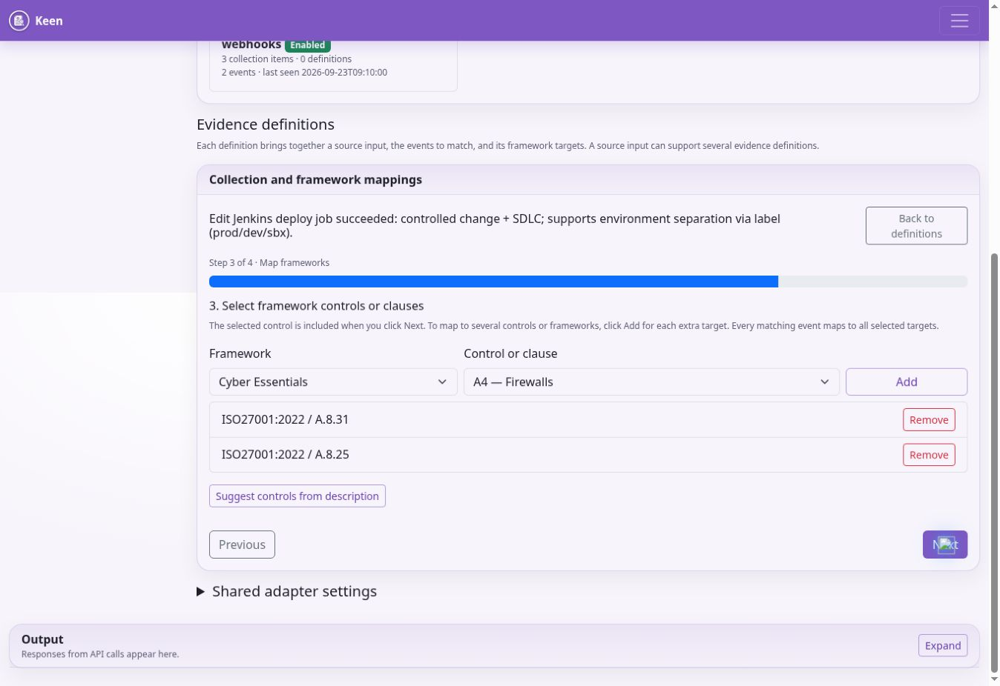
Administrators use Admin → Evidence sources & rules. The Source catalogue shows supported adapters and their availability. An evidence definition combines a source input, the events that qualify as evidence, and the framework controls or clauses they support. One input can support several definitions, and one event can support several frameworks.
Choose Create evidence definition to open the four-step editor.
- Describe the evidence. Explain what the collected evidence demonstrates, such as successful production deployments following the change process.
- Collect and recognise. Select the source adapter and input type. Choose an existing query, job, feed or page, or create a collection item. All events from this source is suitable for a deliberately source-wide definition. Inspect a Recent event with Use this event, then narrow the definition using event fields if needed.
- Select framework controls or clauses. Select a framework and target. Use Add for each extra target, including targets in other frameworks. The selected target is also included when you choose Next. Check the complete list.
- Preview and save. Choose Preview matches and inspect both matches and nonmatches. Set the confidence and enabled state under Advanced rule settings, then Save rule.
Every filled matching field must match. Prefer source, system, actor, action, outcome, severity or label values that you can see on real events. Use regex only where exact values cannot express the intended match. A successful preview shows how the rule applies to the sampled events. Review new events as collection continues.
The description-based control suggestions are candidates to review. Decide which requirements each candidate genuinely supports. Confidence is the rule author’s mapping confidence between 0 and 1, with compliance assessed through evidence and review.
Collection settings and credentials
A Jenkins job’s kind determines its event action; its label determines the event system. For Loki, configure the query and its normalised event fields. For BookStack, select a book and then a page, grouped by chapter; use the additional page-loading buttons when needed. The picker uses the server’s configured credentials.
Additional collection settings accepts connector-specific JSON options inside the editor. Shared adapter settings contains advanced settings common to an adapter. Connection credentials and adapter enablement remain server settings: ask the hosting operator or systems administrator to configure them. Never paste tokens or passwords into descriptions, matching fields or shared JSON settings.
Definitions before events arrive
Select Predefine this rule before evidence is available when there is no sample to preview. Check the first real events as soon as collection runs, preview the definition against them and correct any assumptions about field values or collection identity.
Build and verify an evidence definition
An adapter connects to a service. A collection item identifies an input such as a query, job, feed, project or page. An evidence definition describes which events from that input support which controls or clauses. Reuse collection items when several definitions need the same input.
- Open Admin → Evidence definitions → Create evidence definition. Describe the assurance claim: for example, “Successful production deployments recorded by the approved deployment job.”
- In Collect and recognise, select the adapter and input type. Choose the existing collection item or create one. Avoid “All events from this source” unless every input from that adapter genuinely belongs to the definition.
- Use Recent event → Use this event to inspect actual normalised fields. For a Jenkins input, the job kind supplies the action and the label supplies the system. Use the exact field values on the event, including distinctions such as “deploy” and “deployment”.
- Fill the relevant source, system, actor, action, outcome, severity or label conditions. Every filled condition must match. Start with exact values. Advanced regex is for patterns that exact fields cannot express.
- Select each target framework, control or clause and add it to the target list. Check references and the complete list before proceeding. Description-based suggestions need review.
- Preview both a positive sample and an event that should not qualify. Check that another collection item, a failed outcome or an unrelated environment does not qualify accidentally.
- Review enabled state, mapping confidence and whether to apply the rule to existing evidence. Save and monitor any background job separately from the successful configuration save.
Example: if the inspected event says system “production-api”, action “deployment” and outcome “success”, these three conditions restrict the definition to successful deployments of that system. A failed deployment may deserve a separate definition or incident investigation. Do not reuse the success mapping simply because both events came from Jenkins.
Additional collection settings contains advanced per-item JSON. Shared adapter settings applies common adapter options. Neither is a secret store. Connection credentials and enablement remain server configuration. BookStack collection uses the configured server credentials to browse books and pages; select the intended page and verify the captured material.
Historical evidence and changing rules
Use Predefine this rule before evidence is available only when no sample exists, then inspect the first real events. Preview checks the selected sample; review new events as collection continues. Confidence is the author's confidence in the mapping, between 0 and 1. Review compliance through the supporting evidence and assessment.
Apply saved rule to past evidence evaluates existing events in a background job. Admin → Evidence definitions → Review historical remapping supports a wider operation with source and time filters. Its normal mode finds unmapped events; Include already-mapped events permits additive mappings. Begin with a bounded range and inspect results.
When you narrow or remove a definition, review old automatic mappings separately. Review one batch of at most 500 and remove only the reviewed stale mappings. Manual and imported mappings are preserved by this operation. Restoring a previous rule set restores configuration; historical evidence relationships require a separate review. On a version conflict, reload the latest version and reconcile your changes.
Apply rules to existing evidence
Apply this rule to previously collected evidence in the background is selected by default in the rule editor. Review it before saving. The application creates a background job; completion is separate from saving the definition. You can also use Apply saved rule to past evidence and inspect the reported job status.
After tightening or deleting a rule, old automatic mappings may need review. Under Review old rule mappings after changing a rule, select a source and review a batch of at most 500. Inspect the result before choosing Remove reviewed stale mappings. This action considers automatic rule mappings; manual and imported mappings are preserved.
Admin → Remap provides a broader operation with dates, limit, source, system, action and outcome filters. By default it processes events with no mappings. Include already-mapped events adds new rule-based mappings to events already linked elsewhere. Adding mappings is different from removing stale ones.
If another administrator has saved a newer configuration, reload and reconcile your changes. Do not repeatedly overwrite a version conflict. Restore a prior rule set is available in the editor; restoring configuration does not itself undo all historical event mappings.
Review events and their evidence
Collect and inspect evidence
Admins can run enabled adapters from Admin → Import & ingest. Read the output and check the resulting Events view. Scheduled ingestion uses backend jobs and source cursors to continue from previous runs. A source can be enabled but return no new events if its query, time window or upstream permissions yield no results.
Use Admin → Add Diary evidence for a manual record. Describe the event and its time, attach relevant files or permitted external links, and select applicable controls. A diary record can be sampled in an audit just like other evidence. Record enough context for another person to understand who did what and why.
The Events screen supports search and filtering. Open an event to inspect its timestamp, source, system, actor, action, outcome, severity, summary and available normalised payload. Review artefacts separately from the summary. An artefact is the stored supporting material; external links can change or require access to another system.
Redaction removes recognised secret-like values during ingestion. Optional masking can affect personal data in evidence or exports. Do not assume that all sensitive information is automatically detected. Review source content and the suitability of what you collect.
On an event, inspect mapped controls and mapping rationale. Where permitted, add or adjust manual mappings, start a question, create an incident or sample the event into an audit. Mapping something is an assertion of relevance: make the rationale clear enough for an auditor to challenge it.
Review events, questions and incidents
Search Events with an appropriate date range and source filters. Open an event and inspect timestamp, actor, system, action, outcome, severity, summary and available payload. Open artefacts separately: the summary may omit important details, and an external link may change or require another system’s credentials.
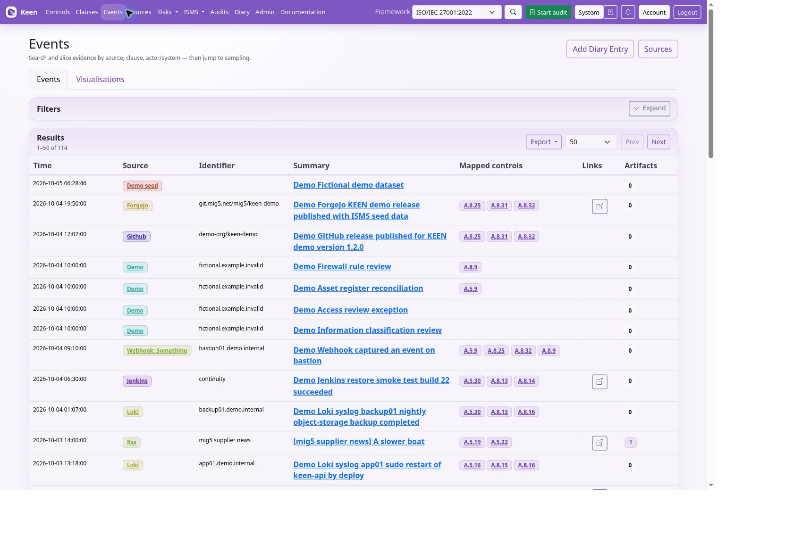
Where permitted, add manual control mappings with a clear rationale, start a question or sample the event into an audit. For a manual activity, an administrator can use Add Diary evidence with a meaningful date, description, supporting material and applicable controls. State who did what, why it mattered and which record proves it.
Use Questions to request missing context from the relevant record. Follow replies in the application; notification delivery depends on the installation. Declaring an incident from evidence requires a configured external incident webhook. Confirm delivery, check the receiving system and follow the organisation’s incident process.
The Sources view helps distinguish a quiet service from a broken collector. No events may mean no activity, a narrow query, a cursor already at the end, expired credentials or a disabled adapter. Redaction and optional masking are useful controls, but still review what is collected and exported.
Questions and incidents
Sources, questions and incidents
Sources groups evidence by origin. Use a source’s evidence links and visualisations to inspect activity over time and identify gaps. Sources can also be associated with effectiveness measures. Missing evidence may indicate a collection problem, a quiet system or an inappropriate query; investigate before drawing a control conclusion.
Questions provide a discussion attached to the relevant entity or event. State the issue, the information needed and its context. Follow replies in Questions or your account view. Notification delivery depends on the installation’s configuration, so the application record remains the place to confirm the discussion.
Declaring an incident from evidence requires a configured incident webhook. KEEN saves the declaration after the receiver returns a successful response. Continue investigation and resolution in your organisation’s incident workflow. See the practical handbook for the declaration steps and delivery-failure behaviour.
Ask and answer questions about evidence and risks
Questions are discussions attached to a specific evidence event, risk or PESTLE(E) item. They keep a reviewer’s uncertainty with the material being reviewed. Use this workflow on evidence events, risks and PESTLE(E) records to clarify their content.
- Open the evidence, risk or PESTLE(E) detail and its Questions area. Your account needs access to that record and permission to create questions.
- Write a specific question, such as “Which restore test does this result refer to, and where is its completion record?” Explain the missing context and submit it.
- For evidence questions, attach supporting files where useful. Attachments are supported for evidence-question posts; risk and PESTLE(E) questions are text-only.
- Use My Questions to follow questions you opened and unread administrator replies. Administrators use the Questions queue, which can show unanswered, reviewing, answered or all threads.
- Return to the linked record to read the discussion in context. Only administrators and the thread’s author can reply, subject to access checks.
A new thread starts Unanswered. An administrator can mark it Reviewing while investigating. An administrator’s reply sets it to Answered; a subsequent reply by its non-administrator author reopens it as Unanswered. Administrators can also set these statuses explicitly. An Answered status records the workflow state. Assess the evidence’s sufficiency using the reply and supporting material.
Unread indicators help authors find responses. Optional administrator-configured question webhooks can notify Slack, Teams, Google Chat or a generic destination. The discussion remains in KEEN; do not assume that replying in an external chat creates a KEEN answer. Deleting a thread requires the question-delete permission and removes discussion history, so use a reply or status change when you intend to preserve the review.
Declare an incident from evidence
Incident declaration lets you escalate an evidence event to a configured external incident workflow. The administrator must configure an incident webhook, and your account needs event access and incident.create permission. Without that integration, KEEN cannot complete a declaration.
- Open the event containing the concerning evidence. Check its timestamp, source, affected system and attached material.
- Choose the incident action, supply a concise title and describe the concern, impact and immediate context. The event link accompanies the declaration.
- Submit once and wait for the result. KEEN sends the declaration and event context to the configured webhook.
- On a successful 2xx response, KEEN saves the incident declaration against the event, including its creator and creation time. Review that record and continue the response in your organisation’s configured destination.
A delivery failure displays an error and leaves the declaration unsaved. If the receiver processed a request but its response was lost, check the destination before resubmitting to avoid duplicates. An HTTP success confirms delivery to the integration. Follow investigation and resolution in the receiving system.
Manage assignments, severity changes and resolution in your external incident system. Deleting the declaration in KEEN requires incident.delete permission and does not recall the outbound webhook or close an external ticket. Keep response actions, conclusions and any resulting risk treatment in the appropriate records.
Assess and treat risks
Assess and maintain risks
KEEN uses one set of risk scenarios across the risk editor, register and heatmap. A risk can be associated with confidentiality, integrity and availability (CIA), an asset, categories, an owner, treatment information and controls from relevant frameworks.
Use Risks to create or edit a scenario. Describe the threat and business context, select or create the relevant asset, set its CIA associations and assign an owner. Review the applicable controls. Keep the scenario specific enough to support a treatment decision; avoid creating several indistinguishable risks for the same situation.
Rate inherent likelihood and impact before treatment, then residual likelihood and impact after the intended treatment. Each rating is 1–5 and the corresponding score is likelihood × impact. The same ratings appear in the editor, register and heatmap. Record the treatment strategy, status, plan and due date so a lower residual score has an explanation.
The register’s thresholds classify scores. Default maximums are 4 for low, 9 for moderate and 16 for high; scores above the high threshold are critical. Threshold changes apply across the register. Agree the scoring method before changing them, and distinguish an unrated risk from a low risk.
Use the reusable risk library

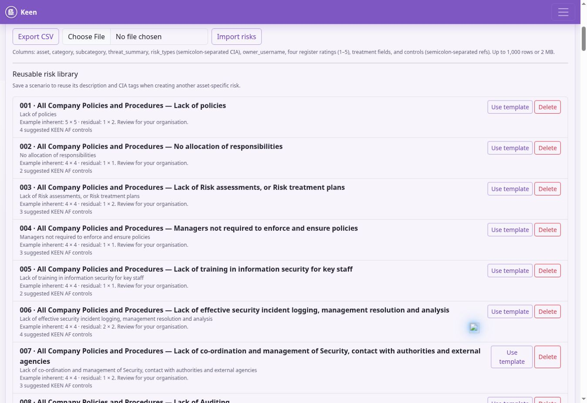
Open the Risk register and find Reusable risk library. Choose a scenario to start a new assessment. KEEN fills the description, CIA tags, treatment guidance and available suggested assessment fields. Review the suggested asset and example ratings, set the actual owner and treatment, and save the risk for your organisation.
The supplied library integrates with the KEEN Assurance Framework. Templates can suggest KEEN-AF control references; when creating the risk, valid remaining references are linked under KEEN-AF:1.0 even if another framework is currently selected. Links for other frameworks remain separately manageable. Check implementation evidence for each suggested control.
To reuse your own scenario, select a risk in the register and choose Save scenario to library. Use a general scenario name and remove customer-specific or personal details from reusable text. Reuse creates an independent assessment to review and maintain.
Risk register exchange and the Mitigator
Export the current register as CSV when you need an external review. Import creates new scenarios. Edit existing records through the risk editor. Start with an exported header, use the current column names and choose the intended framework for control references. The import accepts up to 1,000 rows and 2 MB and rejects the whole file if a row fails validation. Review ownership, scores and control references before importing to avoid duplicates.
The KEEN Mitigator suggests controls using scenario categories, CIA associations and other assessment inputs. Use those suggestions alongside the library and your own analysis. Review suggested relationships against your own assessment and remove irrelevant ones.
Assess a risk through to treatment
The Risk register & heatmap tab shows your current risks and their ratings. Open the Reusable risk library tab to browse suggestions and add relevant risks to your register. Bulk import and export tools are available in the expandable section below the register.
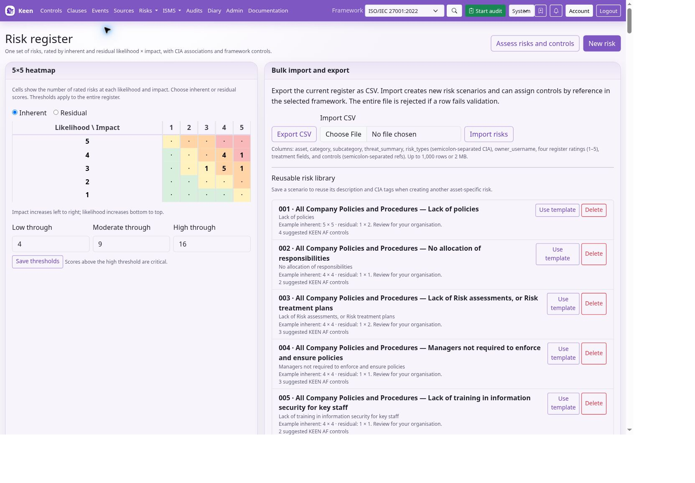
- Open Risks to create a scenario, or choose Use template in the Risk register’s reusable library. Describe the threat, affected asset and business consequence. Avoid making the entire assessment just a label such as “cyber risk”.
- Select the asset, category and subcategory, relevant confidentiality/integrity/availability associations, and an owner. CIA describes the effects of a scenario; the 1–5 ratings assess likelihood and impact.
- Rate inherent likelihood and impact before the planned treatment. Record the basis for the ratings. For example, likelihood 4 and impact 5 produce an inherent score of 20.
- Choose relevant controls and a treatment strategy. In the register, record the treatment status, plan and due date. Give the owner a concrete action and completion evidence to obtain.
- Set residual likelihood and impact to reflect the assessment after treatment. For example, 2 × 3 produces 6. Explain why the treatment changes the risk and link evidence of completed treatment.
- Review the saved risk in both the register and heatmap. Follow its controls and compare the supporting evidence with the treatment claim.
Default score bands are low up to 4, moderate up to 9, high up to 16 and critical above 16. Agree your method before changing the shared thresholds. Complete the ratings for each unrated risk before prioritising it. Review assessments when assets, threats, vendors, controls or the organisation change.
Reusable scenarios and CSV exchange
A library template supplies a starting description, CIA tags, treatment guidance and available example ratings. Review its suggested asset and assess the actual context. The supplied library includes KEEN-AF control mappings; valid template links can be added under KEEN-AF:1.0 even when another framework is selected. Other framework relationships remain separately manageable.
Use Save scenario to library from a selected register risk to contribute a reusable scenario. Generalise its wording and remove organisation-specific or personal details. Assessments remain independent when their source template is edited or deleted.
Export CSV to obtain the current headers before preparing an import. Import creates new scenarios, with a limit of 1,000 rows and 2 MB, and rejects the file when a row fails validation. Check identifiers, scores, owner details and the framework used for control references. Re-importing the same file can duplicate risks. Use the risk editor to update existing assessments.
Use the Mitigator’s suggestions
Choose the intended framework, then open KEEN Mitigator. Describe a specific potential issue in natural language and identify the affected asset, party or process. Select category and subcategory, relevant CIA associations and impact flags, then run the analysis.
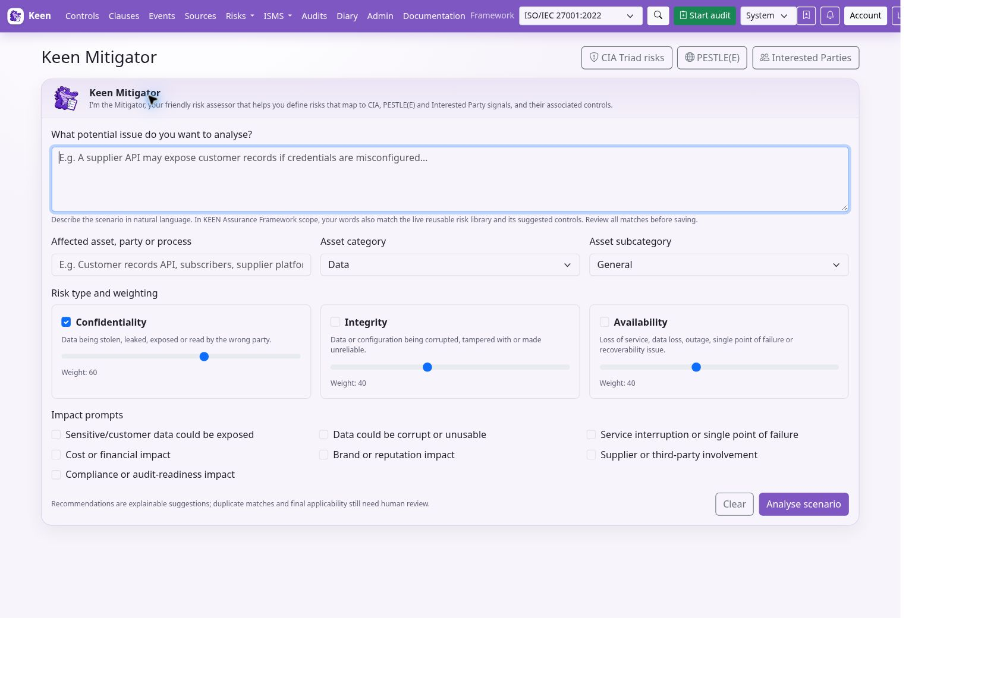
In KEEN-AF:1.0 scope, the wizard also searches the current reusable risk library. It matches distinctive scenario words and configured synonyms, displays the matching terms, and uses matching templates’ KEEN-AF control references to strengthen control recommendations. This includes the extended library’s AI risks, such as prompt injection, model extraction, unapproved AI tools and excessive agent permissions. Edits to the database library and control catalogue are read on the next analysis.
- Read the detected signals. Check that they describe your concern; a keyword match can still be irrelevant or refer to something already prevented.
- Inspect the reusable library candidates and their control references. Review this template opens the normal risk editor so you can review its description and example ratings before saving. Save the reviewed assessment to create the risk.
- Review the suggested controls and remove unsuitable selections. Out-of-scope controls are labelled for review and retain their current applicability until you edit it.
- Check existing matching risks before creating another assessment. Review PESTLE(E) and Interested Party candidates separately.
- Either create a risk from your original scenario using the selected controls, or follow a library template. Review the resulting assessment, owner, likelihood, impact and treatment. Set the ratings yourself when creating a risk from your original scenario.
Try “Our staff use unapproved AI tools”, “Supplier contracts do not protect personal data”, or “We cannot restore our backups after ransomware”. Add context if the matches are too broad. The engine uses deterministic, explainable matching rules. It may match negated statements, so confirm each proposed risk against the actual scenario. Other framework scopes keep framework-specific control suggestions without importing KEEN-AF library links into their results.
Context and objectives
PESTLE(E) and interested parties
Use PESTLE(E) to record external and organisational issues through the available lenses. Link each relevant issue to business processes and framework clauses. Explain relevance and impact so the record supports scope and management-system decisions. Review the issues when the organisation or its environment changes; sample them into an audit where useful.
Interested Parties records the people and organisations whose needs affect the management system. Record the nature of their interest, associated controls and planned communications, including method, events or frequency. Link the party to relevant clauses and other available records. Keep stakeholder expectations distinct from evidence that an obligation has been met.
Organisational context: PESTLE(E) and interested parties
PESTLE(E) records political, economical, social, technological, legal, environmental and ethical issues. Describe the issue and rationale, choose its lens, and link relevant business processes and framework clauses with an appropriate relevance level. A change in law, dependence on a key supplier or a new technology can each provide context for risks and objectives.
Interested Parties records who has a need or expectation and the nature of that interest. Record planned communications, including method, relevant events or frequency, and link applicable controls or clauses. A customer expectation is context; a completed review or signed agreement may provide evidence of meeting it. Revisit both lists during management review and sample the relevant records into audits where useful.
Define objectives you can evaluate
Open ISMS → Objectives. Enter the requirement and intended goal, then identify the owner, metric and completion cadence (daily through annually, or as required). Explain the completion method and evaluation method separately: doing the work and checking whether it achieved the goal are different activities.
Use Resource users and Resource Requirements text to describe who and what are needed. Link relevant controls and clauses. Save the objective and inspect its detail page and changelog. When the objective is reviewed, compare its intended metric and evaluation method with actual effectiveness observations and meeting decisions.
Example: requirement: tested recoverability of essential systems; goal: restore a representative service within the agreed recovery objective. Completion method: perform the documented exercise. Evaluation method: compare measured recovery time, integrity checks and outstanding issues with the agreed criteria. Use the results of your own restore tests when assessing an actual system.
Manage the ISMS
Maintain the ISMS
ISMS brings the management-system records together. Objectives describe intended outcomes. Link them to the appropriate controls, owners and effectiveness measures. Measures describe how effectiveness is assessed; metrics are the dated observations or scores used to assess a measure.
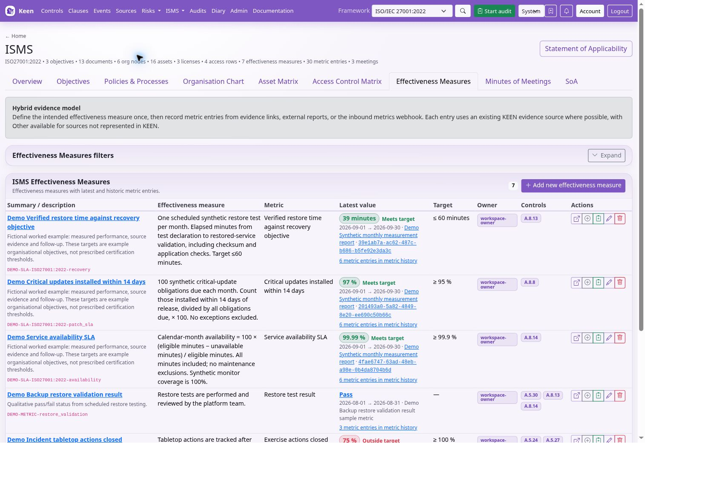
Review the measurement method, target and source before adding a metric. Some metrics are received through configured webhooks. Automatic zero-value behaviour, where configured, is specific to the measure and should be interpreted as part of its method, with source coverage checked separately.
Policies and processes can be maintained as document records with supporting links and associations. The Documents workspace supports folders, types, tags, rich-text content, version history and comments. Save substantive changes as a new content version and review the history when establishing which policy wording was in force. Concurrent edits can require a reload to reconcile another person’s changes.
Assets represent the resources your organisation manages. Keep ownership, organisation relationships and relevant risks current. The organisation chart records roles and reporting relationships. The Access Matrix records who or which role should have access to an asset and at what level; it records intended access. Apply grants and revocations in the external system.
Application Configuration records help document relevant application settings. Minutes of Meetings records decisions, discussion and attendance, including people who do not have KEEN accounts. Link decisions to objectives, risks, controls and follow-up work where the screen supports those relationships.
People and vendors
Open People & vendors to maintain personnel and supplier assurance. A person does not need a KEEN account. Record their optional account, organisation role and assets, then add assurance records such as training, screening or policy acknowledgement. Each assurance record can include a category, requirement, status, completion and expiry dates, authoritative source and evidence link.
Vendor records contain supplier details and associated assets. An asset has one supplying vendor: assigning it to another vendor moves that relationship. Review the effect before saving. Use these records to organise completed checks and link their authoritative source evidence.
Policies, processes and documents
Organise documents and preserve their history
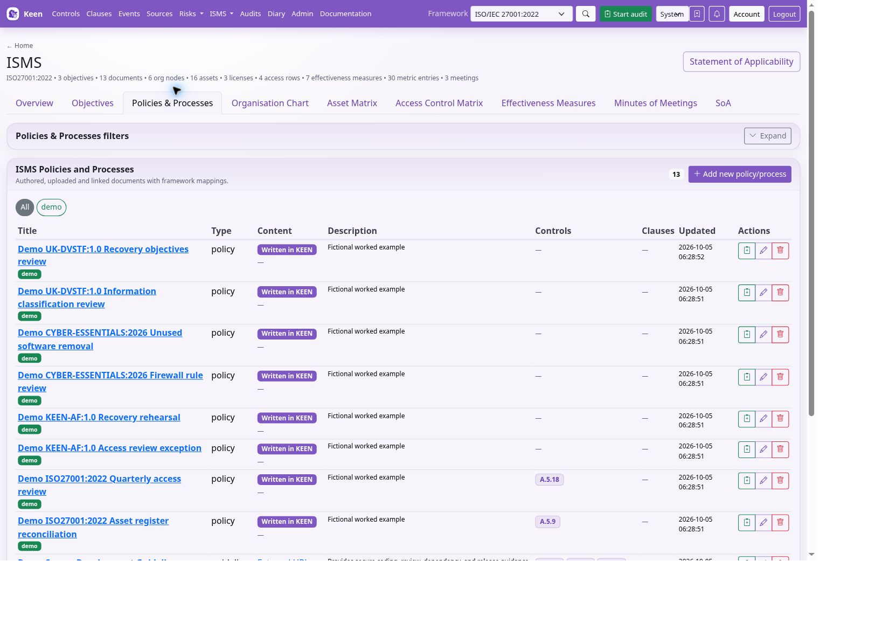
- Open ISMS → Policies & Processes for the write/upload/link form. The separate Documents workspace provides folder browsing, the native text editor, revision history and comments. Create a folder under the intended parent. Use a clear structure such as Governance, People, Operations and Reviews, and use control links to connect material across that structure.
- Create a document with title, type, folder and tags. Use a concise summary/description to explain its purpose. Link the relevant controls and clauses where the editor provides these fields.
- Choose the content mode: Write in KEEN for rich text, Upload a file for an existing document, or Link to a URL for an external source. Verify that intended readers can access any linked source.
- Save, reopen and review the actual content. For rich text, use headings and lists to make responsibilities and procedures easy to find. For uploaded material, verify the correct file was attached.
- For text written in KEEN, saving changed content creates a numbered revision. Inspect Revision history in Documents to preview previous content and its checksum. File uploads and external URLs do not use this native-text revision history. Use Comments for discussion without treating a comment as an approved content revision.
- Use folders, types and coloured tags to find the current material. Preserve the document’s relationships when reorganising it, and check links after moving it.
Editing a URL record does not preserve every historical version of the external page. Use an appropriate captured artefact when a fixed version must be demonstrated. Record staff policy acknowledgement in People assurance records and link the supporting evidence. On concurrent-edit conflicts, reload the newest version and reconcile intentionally.
Write, upload and link policies and procedures
KEEN stores a document record separately from the content it refers to. The record supplies the title, type, description, folder, tags and relationships to controls and clauses. This lets a policy participate in the management system whether you maintain its text inside KEEN, upload a file, or keep it in another document system.
Write a policy directly in KEEN
- Open ISMS → Policies & Processes and create a document. Enter a meaningful title, select its type, and describe its purpose. Select the folder and tags used by your organisation.
- Select Write in KEEN. Use the rich-text editor for headings, paragraphs, lists and other supported formatting. For a policy, a useful structure is purpose, scope, responsibilities, requirements and review arrangements.
- Select the relevant clauses and controls, then save. Open the document detail to check the rendered text and the saved relationships.
- Use the Documents workspace for continued writing. Select a folder or search by title, tags or description, then select the document. Edit its text and save.
- Open a version in Revision history to view the saved content and SHA-256 checksum. A changed text body creates a new content version; the history records saved content. Manage formal approval through your organisation’s review process.
- Use Comments for discussion about the document. Record formal approval and review responsibilities according to your organisation’s process. Capture approval explicitly according to that process.
If another editor saved since you opened the text, KEEN rejects the stale save with a conflict. Copy your unsaved text somewhere safe, reload the current document and reconcile the changes. Selecting an old version opens a preview and keeps the current document unchanged.
Upload an existing document
In the ISMS document form, select Upload a file, choose the file and save. The API accepts non-empty files up to 100 MiB; a reverse proxy may impose a smaller limit. Open the saved detail page and check the filename, uploader, upload time and downloadable file. KEEN records the stored file’s size and checksum.
Uploading a replacement changes the current file associated with that document record. The Documents revision picker covers native text. Retain uploaded-file versions separately when historical review is required. Keep an explicitly versioned record or an appropriate captured audit artefact when you need to prove exactly which uploaded version was reviewed.
Link a document maintained elsewhere
Select Link to a URL and enter the document’s address. Add its title, description and control/clause links as you would for a native policy. Check the URL with an account representative of its intended readers. Readers also need permission in the external document system.
A URL is a reference to a changing external resource. Linked pages remain in their source system; capture the relevant version when you need a historical record. BookStack collection and section snapshots are separate features for bringing captured BookStack content into the evidence workflow. For an audit, select the relevant captured material when historical content matters.
The ISMS content selector controls what you edit. Check the saved detail when switching between native text, upload and link: the record can retain file metadata from an earlier upload. Use folders and coloured tags for discovery, and application permissions for access control.
When the BookStack ingester is enabled, open ISMS → Policies & Processes → BookStack pages & sections to select a page or section, associate it with an ISMS document and a framework control or clause, and retain a snapshot for audit evidence. Document management permissions govern capture; readers can review retained snapshots.
People, suppliers and assets
Organisation chart, people, vendors and assets
Build the organisation chart
In ISMS → Organisation Chart, create a node with name, type, optional parent, users and description. Use parents to represent your organisational hierarchy. Associate the relevant controls and clauses, save and inspect the chart; its zoom and reset controls help explore larger structures. Keep roles and people distinct so a personnel change does not erase the meaning of the role.
Maintain the People directory
In People & vendors → People, enter name, optional email and position, an optional KEEN account and organisation role, assets/devices used, and notes. A Person need not have a login. Select the person before adding assurance records.
For each assurance record, choose category, requirement or training, status, completion and expiry dates, authoritative source, evidence link and notes. Examples include screening, training and policy acknowledgement. Record the source, result and date of the check. Review expiring assurance records and retain appropriate evidence; arrange screening and training through the responsible team or provider.
Connect suppliers to assets
In Vendors, record supplier name, description, website, contact and assets supplied. An asset has one supplying vendor: assigning it to a new vendor moves that relationship. Check the current supplier before saving. Connect related supplier risks and evidence through the appropriate risk and evidence records.
Maintain the asset matrix
In ISMS → Asset Matrix, enter the asset, category, subcategory, licence where applicable, owner, “Register held by” relationship, description and relevant controls and clauses. Maintain category/subcategory and licence lists using their associated forms. Distinguish ownership and organisational responsibility from the person currently using a device.
Open the asset detail page to review relationships and changelog. Where available, Sample into audit links it to a review. Keep its risk associations and supplier/person assignments consistent when equipment moves or a service is retired. Assess technical controls using operational evidence linked to the asset.
Record access responsibilities
The Access Control Matrix records Task/Action, Service, Managed Hosting Accounts, Status, Approved by, Roles and Notes. Add a hosting-account record first if needed, using its name, account ID and descriptive notes. Link the intended roles and document the approval basis. Review entries against actual upstream permissions during access reviews.
This assurance record describes intended access. Provision and revoke access in the relevant external service. Application Configuration records document context. Apply operational changes in the relevant application. Put passwords and API keys in the designated secret store, never these records.
Maintain a connected asset register
The ISMS Asset Matrix and the assets used by risk assessments share the same underlying asset records. Create a reusable asset once and select it in the relevant risks, supplier records and personnel relationships. An asset may represent a specific device, an information set, a service or an agreed group of assets; state that boundary in its description.
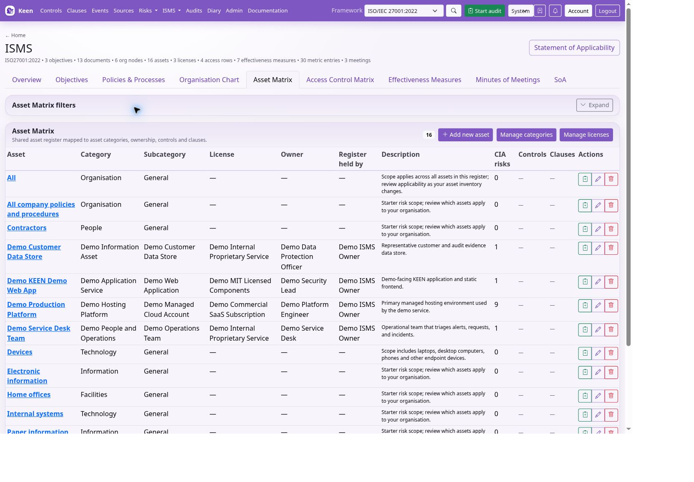
- Maintain the organisation chart so that the asset’s owner and register custodian can refer to the correct organisational nodes. These fields are links to nodes in the organisation chart.
- In ISMS → Asset Matrix, create or edit the asset’s name and description. Select its category and a subcategory belonging to that category. Select a licence from the managed list where it applies.
- Set Owner and Register held by. Ownership identifies responsibility for the asset; the register relationship identifies who maintains its inventory information.
- Link controls and clauses in the selected framework. Save and open the asset detail to inspect those links and the changelog.
- In People and Vendors, associate devices/assets with the relevant people and supplier. In Risks, select the existing asset for assessments affecting it.
- When the asset changes, review its risks, users, supplier and control relationships together. A name change should not require creating a duplicate asset.
Example: create “Staff laptops” with a description defining which devices are included, an IT ownership node and a register custodian. Link the relevant endpoint controls, associate the supplier and people, and use that asset in a loss/theft risk. Sample the asset record together with actual endpoint evidence during an audit; the asset entry alone only establishes what is recorded in the register.
The Access Control Matrix connects a task or permitted action to a service asset, hosting accounts, approval information and one or more organisational roles. It documents responsibilities and access decisions. Apply permissions in the relevant service. Compare the matrix with collected account/access evidence when reviewing actual access.
Measure effectiveness
Define measures and record observations
An objective describes the desired result. An effectiveness measure describes how to assess it. A metric entry is a dated observation. A control can have several relevant measures, and a measure can have a sequence of observations from manual or configured automated sources.
- Open ISMS → Effectiveness Measures. Enter Summary, Description, Effectiveness measure and Metric. Make the method understandable to someone who did not design it.
- Choose a stable Metric key if integrating observations. Enter the threshold rule, target value, unit, owner, frequency, notes and linked controls. A metric key must be unique; supported characters are letters, digits, dot, underscore, colon and hyphen.
- Save the measure. In Record metric entry, select it, supply a numeric Value or Qualitative value/status, and use the intended unit. Record period start/end and source type, title, URL or reference. Where appropriate, associate the source event UUID.
- Explain exceptional results in Notes. Save and inspect the measure’s Metrics tab. Check dates, value and source before using the result in an assurance conclusion.
- Use Visualisations to review the trend with source and date filters. Investigate gaps and changes. Review observations across the full audit period.
Example: “Critical vulnerabilities fixed within agreed time” might use a percentage of eligible findings resolved on time, with a target of 95%. The measure must define the denominator, exclusions, reporting period and source. Confirm that the scan ran and covered the intended systems before interpreting “No new findings”. Check the installation’s automatic-zero behaviour and distinguish no data from a measured zero.
Automated metric ingestion has its own endpoint and authentication configuration. Use the measure-specific ingestion route to create metric observations. Ask the administrator to validate a single sample against the configured provider, key and period before enabling recurring submissions.
Interpret effectiveness measurements
A measure defines what you intend to evaluate, while its metric entries record observations over time. Write the method precisely enough that another person can repeat it. Include what is counted, the reporting period, exclusions, the unit and the threshold that represents success. Link it to the controls whose effectiveness it helps assess.
- Create the measure with a summary, description, measurement method and metric definition. Set owner, frequency, target and threshold operator.
- Give automated measures a stable, unique metric key. Use the same key in the integration that submits observations; changing a display title is different from changing this integration identifier.
- Record an observation with its recorded date, period start/end, numeric value or qualitative result, unit and explanatory notes. Add source title, URL/reference or a source event where available.
- Inspect the measure’s Metrics and Visualisations views. Filter the source and date range to check that the observations refer to comparable periods and populations.
- Open a metric entry to inspect its source and notes. Edit a mistaken observation deliberately; use the changelog when understanding a correction.
- Sample the measure and relevant individual observations into an audit. The measure explains the test; the entries supply the results that support your conclusion.
Example: a backup-restore measure might target at least 95% successful scheduled tests. A value of 95 needs a clear denominator and period, such as 19 of 20 tests completed in September. A qualitative statement such as “one restore exceeded the objective” can explain the result but should not be mistaken for another percentage.
Understand automatically recorded zeros
KEEN can materialise zero entries for closed calendar months with no observations for eligible zero-target measures. The implemented rule covers monthly and required/as-required measures whose target is zero and whose operator permits zero (blank, equals or at-most). Existing observations for the period prevent an inferred zero.
These entries are labelled Automatically recorded zero. They describe the absence of recorded observations under that rule. Establish incident and exception coverage through the relevant source evidence. Check collection coverage before relying on them. This behaviour is unsuitable as evidence of successful data delivery by itself.
Meetings and decisions
Record decisions in meeting minutes
In ISMS → Minutes of Meetings, set title, date and optional start/end times. Select People attending and People apologising. If someone is missing, enter their name and optional email and use the offered action to create a Person for future use. Existing KEEN-user attendee fields remain available for older account-based records.
Select supporting ISMS documents and add external links with meaningful titles. Write agenda, minutes and decisions in the rich-text editor; identify responsible people and intended follow-up dates in the notes. Link relevant controls and clauses, save, and inspect the detail page and changelog.
For a management review, useful inputs include current risks and treatment, measure trends, audit findings, objectives, changes in interested parties and overdue work. Record actual decisions and update the affected records afterwards. Update the risk owner, treatment status or objective in its own record after recording the decision in minutes.
Plan audits and sample evidence
Plan and conduct audits
Use Audits to create an audit with a clear scope, framework, dates and responsible participants. Add relevant controls and clauses, then sample evidence, risks or other supported records. Explain why each sample was selected and what it demonstrates. Include both favourable and adverse evidence where needed for a balanced conclusion.
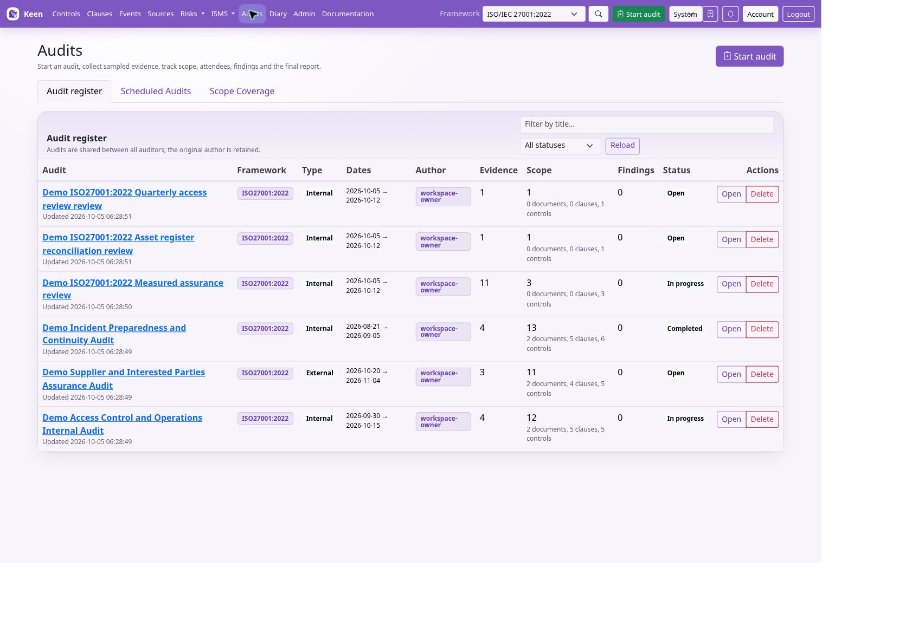
Record findings with enough detail to identify the requirement, observed facts and necessary action. Maintain notes and the executive summary, and review the audit before completing it. Completed audits restrict further mutation; finish the review before changing status.
Scheduled audits generate audit records through the background scheduler. Creation timing depends on the configured look-ahead window. Email and calendar invitations require outbound mail configuration. Check that the scheduled audit actually appears and that participants can access it.
Use scope-coverage views across audits to identify requirements that have not been examined recently. Use coverage to plan reviews, then examine sample quality and audit outcomes.
Plan and conduct an audit
- Open Audits → Start audit. Supply title, framework, audit type, begin/end dates, and report notes explaining purpose and boundaries. You can draft the executive summary later.
- Select the ISMS documents, clauses and controls in scope. Use filters to find the intended items and inspect the saved scope. Define the audit scope explicitly alongside its title.
- Open the audit and add participants. Prefer the Person directory; existing KEEN-user selection remains available. Record their role in the audit and check names/contact details before sending any invitations through configured features.
- From an event or supported record, use its sampling action to add it to the audit. Include risks, assets, objectives, effectiveness measures or other supported records as relevant. Review the audit’s samples and explain selection and assessment in the available notes.
- Compare each requirement with the sampled facts. Add a finding with enough detail to identify the requirement, observation and needed action. Include adverse as well as favourable evidence.
- Maintain Report Notes and Executive Summary. Attach an external report with Upload report or add supporting URLs where useful. Review scope, participants, samples and findings together.
- Use Export audit ZIP and inspect the exported material. Check that the intended evidence is present and appropriate to share. Complete the audit only after review: completed audits restrict further mutation.
A linked control is a scope statement; a sample is the material actually examined; a finding is the result of your assessment. Keep those distinctions visible. Select samples that cover important requirements and the relevant period.
Select evidence and finish an audit
Start with the audit’s framework, purpose, dates, participants and scope. Use Open while preparing and In progress while conducting it. Scope comprises selected documents, clauses and controls. Scope identifies planned coverage. Sample the material you examined and record the results of testing.
Choose the material to sample
From an evidence event or another supported detail page, use Sample into audit, select the intended mutable audit and add a meaningful title and notes. The API supports evidence events, risks, PESTLE(E) items, interested parties, objectives, documents, BookStack policy snapshots, organisation-chart nodes, assets, access-matrix rows, application-configuration rows, meeting minutes, effectiveness measures and individual metric entries. The audit also accepts supporting URL evidence.
Explain why you selected each sample, which requirement it addresses and what you observed. Sampling the same event or entity again updates its existing sample information. Removing a sample removes its association with the audit; it is different from deleting the underlying event or ISMS record.
Most sampled ISMS records are references to the underlying record, which can change after sampling. Keep the applicable native document version or a captured artefact when you need a historical point-in-time record. A BookStack policy snapshot has its own captured revision/checksum and is sampled under its target framework.
Record findings and conclusions
Findings can be Major Non-Conformity, Minor Non-Conformity, Opportunity for Improvement or Best Practice. Give each finding a title and description, optionally associate a control, and maintain its status as Open, Accepted or Closed. Explain the requirement, sampled observation and conclusion with enough detail for another reviewer to follow the assessment.
Maintain the audit’s report notes and executive summary, add supporting links and upload the final report where applicable. Review participants, scope, samples and findings before completion. Completed and Archived audits restrict edits to their contents; ensure necessary changes are made while the audit is mutable.
Export audit ZIP renders the audit page as a PDF, includes its uploaded final report when present, and downloads attachments associated with sampled evidence events. Capture linked external content and other ISMS records separately when they are required in the export. Inspect the export before distributing it, including any configured masking and PDF footer.
Schedule the next audit
Scheduled Audits holds templates that create ordinary Open audit records. Choose an exact date, the first weekday of a month or the first named Monday–Friday. Recurrence choices are once, weekly, monthly, quarterly and yearly, with an interval and optional end boundary. Month-based first-weekday rules cannot be combined with weekly recurrence.
Maintain scope and attendees on the template. Selected documents can contribute their linked clauses and controls when the occurrence is created. Date-only scheduling uses the server’s KEEN_TIMEZONE; the administrator can also configure how many days ahead occurrences are created. An occurrence already created is a separate audit record, so review it when changing its template.
The worker and scheduler must be running for creation to occur. Configured mail can deliver notifications and calendar information. Verify delivery after saving the template. Scope Coverage compares completed audits, scheduled occurrences or both over the chosen window. Use it to identify planned and completed coverage, then assess the quality and outcome of the work.
Schedule recurring audits and check coverage
- Open Audits → Scheduled Audits. Enter title, framework, audit type and planning notes.
- Use the Date selector to choose the supported date rule. Set the first run date, or the first-weekday month/year fields offered by the selected rule. Check the intended date against the working days in that month.
- Set the end date/duration details, Recurrence, Every interval and Until where appropriate. A one-off schedule and a recurring template serve different purposes.
- Select policies/processes in scope and add attendees with the supported name, account, email and role fields. Save the scheduled audit and inspect its calendar placement.
- Before the date, confirm the audit record was created. The backend creates it according to
KEEN_SCHEDULED_AUDIT_CREATE_DAYS_AHEAD; creation occurs within that configured lead time. - Open the created audit and review its actual scope and participants. A later template change should not be assumed to rewrite an already-created audit. Review both separately.
Worker and scheduler availability are required. Email/calendar delivery additionally needs configured outbound mail. If a scheduled occurrence is missing, ask the administrator to check scheduling logs and the look-ahead window. Avoid creating duplicate manual audits until you know whether an occurrence is queued.
In Scope Coverage, choose the audit source (as offered by the screen), date range and filters. Inspect which controls, clauses and documents have been included and follow links back to those audits. Use gaps to plan future coverage. Review sample sufficiency and findings for each requirement included in an audit.
Review progress and personalize KEEN
Search, visualisations and personal settings
Use search and filters together, and check the active framework and date range when results look incomplete. Saved searches, also called Shortcuts, keep useful query combinations for later. Account preferences include date format, timezone, default landing page, default framework, theme and filter behaviour.
Visualisations show relationships and distributions for controls, clauses, evidence, risks and other entities. Follow a relationship back to its underlying record before making an assurance judgement. Use a graph to navigate relationships and review the underlying records.
Your account view brings together questions and records you own or relate to, including audits, risks, objectives, organisation roles, assets and meetings. Keep account details and assignments current so responsibility is visible.
Review changes and resolve problems
Entity Changelog records semantic changes to supported records: who changed them, when and the field differences. The administration Request Log records API requests, response status and timing. Use the entity history for the content change and the request log to investigate the surrounding activity. These are different records and neither should be assumed to be a complete recording of every browser interaction.
If a control has no evidence, check the active framework, target reference, source collection, event fields and definition preview. If old mappings remain after a rule change, review stale automatic mappings. If a save conflicts, reload the latest record. If an action is unavailable, check your permissions with an administrator.
Keep the management system current
Use an agreed review cadence. Review overdue risk treatments, ownership changes, expiring personnel assurance, supplier changes, document revisions, missing metric periods and audit coverage. Record decisions in meeting minutes and update the underlying records. Use Entity Changelog to inspect content changes and the administrator’s Request Log to investigate related API activity.
Account preferences control date format, timezone, default framework, landing page, theme and filter behaviour. Choose a light palette or its dark variant, such as Purple (dark) or Teal (dark), from the Theme list and save your preferences. Saved searches/Shortcuts make repeat reviews easier. When information appears missing, check framework and date filters before changing data. For an unavailable action, check permissions: reading a record and managing it are separate capabilities.
Collection health, notifications and recovery
Check workers, schedules and metric delivery
Celery beat enqueues scheduled work and workers execute it. Inspect both sides when a collection, audit occurrence or historical mapping job is missing. Avoid duplicate beat schedulers. Audit creation uses the configured look-ahead window; a template can exist before its first audit is materialised.
Use one Celery beat scheduler and confirm that the worker consumes its queued tasks. Review task failures alongside the relevant collection, audit schedule or metric record.
For effectiveness metrics, validate a single authenticated payload against the running API schema and configured provider. Check metric key, numeric/qualitative value, unit, observation period and source. Confirm the entry appears under the intended measure. Distinguish repeated delivery, missing observations and any configured automatic zero entries when investigating trends.
Mail, calendar invitations and incident/question webhooks need their own outbound configuration. Check delivery failures without repeatedly notifying recipients during diagnosis. Keep the application record and any upstream acknowledgement as separate evidence.
Back up and restore KEEN
Back up PostgreSQL, referenced artefacts, encryption material, required configuration/secrets and compatible release identifiers. Use an application-consistent backup procedure. Record backup success and restore-test success separately.
- Take a database dump to a protected destination using the administrator guide’s procedure. Inventory matching S3 versions or local artefacts and preserve the keys needed to decrypt them.
- Restore into an isolated, empty recovery environment. Keep outbound integrations and schedules disabled until reviewed, so a rehearsal cannot send notifications or ingest on behalf of the live service.
- Use a compatible application version and validate sign-in, a framework, risk, document version, evidence mapping and artefact download. Check representative checksums.
- Rehearse migrations against the copy. Record the previous and resulting schema revisions and any recovery constraints before upgrading the real service.
- Keep the original deployment intact until recovery is verified and cutover is intentional. Rolling back only a container is safe only if the older code supports the migrated schema.
Object retention and eventual deletion are different policies. Include noncurrent versions, legal holds and backups in the lifecycle plan.
Diagnose from the failed boundary
| Symptom | Check first | Confirm recovery |
|---|---|---|
| EC2 terminates before bootstrap | EC2 state reason, regional KMS calls, provisioner role and key state | Instance runs and bootstrap begins |
| Server runs but KEEN is unavailable | Service logs, image pulls, database migrations, DNS and HTTPS | Readiness checks pass and owner can sign in |
| Browser reports 401 or 403 | OIDC issuer/client/callback, exact origin, session state and account permissions | Expected user succeeds; unauthorised identity remains denied |
| Events arrive without mappings | Collection identity, actual normalised fields, definition preview and target references | Positive and negative samples behave as intended |
| Old automatic mappings remain | Stale-mapping review and historical job status | Reviewed stale links removed; manual/imported links preserved |
| Audit or metric period missing | Beat, workers, look-ahead window or ingestion source and date range | Intended occurrence appears without duplicates |
| S3 AccessDenied | Principal, bucket/prefix, KMS key and conditional-write requirements | Own-tenant operation succeeds; other-tenant access stays denied |
Retain useful identifiers and timestamps in problem reports. Avoid copying resolved environment files, private state, tokens or credentials into shared logs. Correct the failed permission or configuration while preserving TLS verification, isolation and request-verification controls.
Configure questions and incident delivery
Question discussions work within KEEN. Administrators may configure KEEN_QUESTION_WEBHOOK_SLACK_URLS, KEEN_QUESTION_WEBHOOK_TEAMS_URLS, KEEN_QUESTION_WEBHOOK_GOOGLE_CHAT_URLS and KEEN_QUESTION_WEBHOOK_GENERIC_URLS for notifications. Generic headers and webhook signing have separate configuration. Test with a clearly identified test question and verify the intended destination receives it.
Incident declaration requires KEEN_INCIDENT_WEBHOOK_URL. Optional headers, signing secret, signature-header name and timeout are configured through the matching KEEN_INCIDENT_WEBHOOK_* settings. Give the receiving service a defined process for creating and tracking an incident. KEEN saves the declaration after a successful HTTP response. Manage ticket resolution in the receiving system.
Grant question.create, question.delete, incident.create and incident.delete according to responsibilities. Reading an event or an ISMS record does not automatically grant every action on it. Question replies are restricted to the thread author and administrators, and the central question queue is administrative.
Choose authentication for your installation
Ordinary KEEN installations can use the supported local, generic OIDC, Google, GitHub or trusted-proxy authentication paths according to server configuration. Generic OIDC supports compatible identity providers through the configured issuer, endpoints, client and callback. Register the exact HTTPS callback and origin for the installation and test with an ordinary user as well as an administrator.
KEEN_HOSTED_MODE is a separate opt-in owner-only deployment policy. Leave it disabled for an ordinary multi-user installation. Enabling it requires the configured OIDC owner identity and additional security settings and deliberately restricts alternative sign-in paths. Do not enable it merely because KEEN is running on a cloud server.
For deployment and recovery, use your installation’s Compose configuration and secrets, preserve the mounted configuration/framework files and back up the database and artefact storage. The standard API startup runs database migrations before serving requests. Review new migrations against a restored copy before upgrading an existing installation.
Use KEEN alongside security monitoring
KEEN alongside Wazuh and SIEMs
KEEN takes an evidence-first approach: collect a record of what happened, attribute it to the relevant framework controls, and make the supporting material available for review. Your security monitoring platform supplies valuable technical evidence. KEEN brings that evidence into the organisation’s wider assurance and ISMS work.
If you already use Wazuh, consider the next question you need to answer: “How does this event support our control, which risk does that control address, and what did we conclude when we reviewed it?” KEEN connects those activities with policies, assets, owners, measurements and audits.
| Area | Wazuh / security monitoring | KEEN |
|---|---|---|
| Endpoint monitoring and detection | Wazuh agents and server analysis provide intrusion detection, file integrity monitoring, configuration assessment and vulnerability detection. | Ingests records produced by these systems and makes them available as evidence. Endpoint monitoring remains with the source platform. |
| Investigation and response | Security teams investigate alerts; Wazuh active response can execute configured actions. SIEM response and case-management capabilities vary by product. | Reviews supporting events, raises questions and can declare an incident through a configured external incident webhook. Response outcomes can be collected as further evidence. |
| Framework attribution | Wazuh supplies compliance rule tags and dashboards, and supports custom compliance identifiers. Other SIEMs offer their own mappings and reports. | Maintains editable frameworks, controls and evidence-mapping rules. Reviewers can inspect automatic mappings, add manual mappings with rationale, and use evidence across relevant frameworks. |
| Evidence across the organisation | Security alerts, endpoint findings and technical assessment results are central inputs. Wider business integrations depend on the platform. | Combines security events with development, operational and organisational records, document artefacts and manually recorded activities. |
| Risk and ISMS management | Security findings inform risk decisions. Broader governance workflows depend on the product and connected tools. | Connects risk ratings and treatments with controls, assets, people, suppliers, objectives, policies and processes. |
| Policies and documents | Security configuration policies support technical checks; document governance depends on the wider toolset. | Supports authored, uploaded and linked documents, version history, folders and enabled BookStack page/section capture. |
| Effectiveness measurements | Operational dashboards and reports provide security measurements. | Records observations against configured thresholds and links measures to controls or clauses, providing evidence of both results and regular measurement. |
| Audits and review | Alerts and compliance reports provide material for an assessment. | Schedules and runs audits, samples evidence, records findings and supports documented review of the management system. |
Wazuh is the concrete security-platform example here. SIEM capabilities vary by edition, integrations and configuration; some include substantial governance or audit features. Evaluate the workflows you already have against the relationships and review processes you want to manage in KEEN.
Bring security events into KEEN
Through Loki: ship OSSEC or Wazuh log records using a compatible collector such as Grafana Alloy, store them in Loki, then configure KEEN’s Loki collection with a focused LogQL query. Wazuh documents its JSON alerts at /var/ossec/logs/alerts/alerts.json. Confirm paths and fields for your installed version and arrange collection of the response records you need. This is a configured integration path using KEEN’s existing Loki ingester.
Through ingestion webhooks: a custom Wazuh integration, an active-response script or a relay can post an event to KEEN’s /v1/webhooks/{provider}/{event_type} API route. With KEEN’s hosted UI proxy, the public path includes /api. Configure the provider’s shared-secret header and environment secret, then adapt and test the sender’s payload. Preserve the source event identifier, timestamp, affected system, triggering rule, action and observed outcome. KEEN’s webhook ingestion stores the submitted payload as an artefact; mapping definitions establish its framework relationships.
The sender/relay needs installation-specific configuration. Keep reporting failures separate from the response action, and arrange bounded delivery retries. The inbound evidence webhook and the outbound incident-declaration webhook serve different parts of this workflow.
Example: from blocked attack to reviewed evidence
- Collect: Wazuh detects repeated authentication failures and an active response attempts to block the source. Collect the detection and the response result, preserving enough context to correlate them.
- Attribute: in KEEN, preview a mapping rule against the actual event and associate it with the relevant monitoring or incident-response controls in your chosen framework. Retain the original Wazuh rule and compliance tags in the supporting payload.
- Assess: review whether the record shows a triggered action, a successful block, or a failure. A detection supports an assertion that monitoring operated; a verified response outcome supports a more specific assertion about response effectiveness.
- Connect: link the applicable control to the risk and policy being assessed. Record a measurement, such as the proportion of sampled responses meeting an agreed response-time threshold, with a defined period, denominator and supporting observations.
- Review: sample the relevant event and measurement into an audit, ask for missing context, and record the finding. A single successful response supports that observation; broader conclusions require representative evidence and assessment of coverage.
A mapped event establishes relevance to a control. Compliance and effectiveness conclusions require review of the evidence, scope, timeliness and exceptions. Wazuh and KEEN both contribute to that work. KEEN is especially useful when your assurance process needs to bring technical signals together with organisational evidence and maintain the resulting control, risk and audit relationships.
Continue with evidence collection and mapping, effectiveness measurements and audit sampling.
References and scope
Comparison reviewed 6 October 2026 against this KEEN codebase and the following primary documentation. Integration examples describe configurable workflows.
- Wazuh components and security capabilities
- Wazuh compliance mappings and custom identifiers
- Wazuh analysis and alert output
- Wazuh custom external integrations and active response
- Collecting and forwarding logs to Loki with Alloy
Map structured fields from agent events
In Admin → Sources & evidence mapping, create a definition and select KEEN Agent / OTLP logs. Select a sample event, then Add field condition. Choose an observed field, an operator and a value. All conditions must match. Leave Action and Outcome empty to allow any value.
| Evidence | Match |
|---|---|
| All package activity | Action regex ^package\. |
| Agent service logs, including old events | Journal service equals keen-agent.service |
| Packages installed | Action package.status and Package state equals installed |
| Cron command invocations (0.1.3+) | Action scheduled_job.started; optionally match Scheduled command |
Service and Program identify the application that wrote the message. System is the registered agent name; the ingestion Source is keen-agent. Collection name selects the original input such as system or dpkg. Operators are equals, starts with, contains and exists. Values are case-sensitive. Missing keys fail; exists checks presence. Preview matches, select framework targets and save. Apply saved rule to past evidence maps existing records without re-ingesting them.
A cron invocation demonstrates a command started. Job completion needs an explicit result. Package activity demonstrates maintenance; patch SLA coverage requires a scoped effectiveness measurement.
Map nginx request evidence
Select source KEEN Agent / OTLP logs and action http.request. Add HTTP status equals 404, Request path equals /.aws/config (or starts with /.aws/), and optionally Log file equals /var/log/nginx/access-mig5.net.log.1. These fields work with previously stored events. To include rotated and current files, use Log file starts with /var/log/nginx/access-mig5.net.log. Filled conditions all must match. Leave Outcome blank to include all reported outcomes.
A 404 is evidence of the HTTP response to a request; it does not by itself prove a security control prevented an attack. Agent 0.1.3 parses standard nginx access-log timestamps and adds HTTP method to new records. Historical timestamps remain unchanged. Query strings are removed from the normalized path.
Client IP evidence conditions
With agent 0.1.4+, nginx common/combined log records include Client IP. In a mapping definition, select Client IP and equals for one address, or is in IP network (CIDR) for a network such as 192.0.2.0/24 or 2001:db8::/32. Combine with HTTP status, Request path and Log file; every condition must match. Earlier stored events lacking client.ip do not match these rules. IP addresses are taken from the logged remote address; nginx trusted-proxy configuration determines whether it represents the original client.
Protect your local account
Open Account → Security → Manage account security and confirm your local password. If two-factor authentication is already enabled, verify an existing authenticator or supply a recovery code. This opens a five-minute management window.
- Authenticator app: scan the QR code, or enter the setup key into your app. Enter its six-digit code to complete enrolment.
- Security key or passkey: give it a recognisable name, choose Add security key / passkey and follow your browser's prompt. You can register up to ten credentials.
- Recovery codes: save the ten codes displayed after your first authenticator is registered. Each code can replace the second factor for one sign-in. KEEN stores only their hashes and cannot display them again.
Local sign-in starts with your username and password. KEEN automatically prompts for a registered security key/passkey, or shows the authenticator-code field when that is your available method. This browser remembers your last successful normal method for the account. Successful verification takes you straight into KEEN. If verification fails or is cancelled, choose another method or a recovery code; you can also select “Can’t use this method?” yourself. A passkey registered here serves as the second factor. Single sign-on uses your identity provider's authentication policy.
To replace a lost authenticator, sign in using a recovery code, then open Security and verify again with another unused recovery code. Register a replacement, remove the lost authenticator and replace your recovery codes. Replacing recovery codes invalidates all previous unused codes. Factor changes sign out other local sessions; select Continue to KEEN to finish your current session.
An administrator can require two-factor authentication for administrators or for every local account. Required accounts enrol before entering KEEN and must keep at least one authenticator. If all authenticators and recovery codes are lost, contact the operator of your KEEN installation for an account-security reset.
Create a mapping from an event
- Open an individual event and choose Create mapping from this event.
- Review the suggested matching conditions. Field names follow the event JSON, including structured keys such as
fields → process.name,fields → host.name,fields → statusandfields → log.file.path. Use the fields actually present in that event. - Remove conditions that are too specific for your intended evidence. A host or IP condition restricts the rule to that host or address. Event identifiers and timestamps identify individual records and usually do not belong in a reusable rule.
- On the control-selection step, set a meaningful mapping name and choose the framework controls or clauses. The suggestion button uses the name to help find relevant controls; refine the name and try it again if needed.
- Review and save. Use the existing-mapping browser to search, edit or delete rules. Use the available historical-application action when you also want to map evidence already collected.
A mapping attributes matching evidence to framework requirements. Collection inputs determine which remote data KEEN fetches. A rule alone does not configure a remote collection.
Send effectiveness measurements
In ISMS → Effectiveness measures, define the measure, its metric key, unit and thresholds. Save it, then expand Send measurements from another system in the editor or the measure's detail page. Copy the generated curl or Python example into your reporting job.
The examples include this installation's endpoint, the saved metric key, framework and unit. Replace the example value of zero with the actual observed result. The threshold remains the criterion against which KEEN evaluates that result. Optional period_start and period_end describe the reporting period as YYYY-MM-DD.
Your administrator configures the isms_metrics webhook and its secret. Supply that secret as KEEN_METRICS_SECRET in the reporting environment; use KEEN_METRICS_HEADER if a custom header is configured. The copied examples contain an environment-variable reference. Each successful POST creates a metric entry, so repeated submissions produce additional entries.
Measurements provide evidence of observed performance, such as service availability or patch coverage. Review the measured result against its threshold, link it to the relevant requirements and sample supporting evidence into an audit when appropriate.
Evidence retention and audit samples
The administrator can retain evidence by maximum age or by maximum event count, or leave automatic retention disabled. Events sampled into audits are protected. Removing a sample from an audit does not release its retention hold; the owning audit must be deleted. A maximum event count applies to unprotected events, so audit-protected evidence can make the total larger.
A purge removes eligible evidence and schedules storage cleanup. Object-lock or retention rules in the storage provider may delay physical deletion; administrators can inspect pending cleanup. Audit deletion releases that audit's holds. Evidence also protected by another audit remains protected.
Account security emails
When your installation has SMTP configured and your account has an email address, KEEN sends security alerts for successful sign-ins from an IP address it has not previously recorded for your account, password changes or administrator password resets, and authenticator additions/removals, recovery-code replacement or operator MFA resets.
A sign-in alert is generated after authentication is complete, including the second factor when required. A different mobile, VPN or ISP address can trigger an alert. Emails show the account, installation, UTC time and IP address. If you do not recognise the activity, open your known KEEN address directly and contact your administrator.
Security emails are delivered in the background. Check that your account email address is correct. Your administrator configures the mail service and the trusted proxy addresses needed to identify browser IPs.